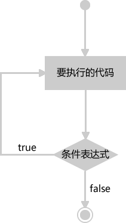

首页 > JavaScript
JS do while循环语句的用法
JS do while 循环与 while 循环非常相似，不同之处在于，do while 循环会先执行循环中的代码，然后再对条件表达式进行判断。因此，无论条件表达式是真还是假，do while 循环都能至少执行一次，而 while 循环就不行了，如果条件表达式为假会直接退出 while 循环。
示例代码如下：
1
1 + 2 + 3 + ... + 98 + 99 + 100 = 5050
JS do while 循环语法
JS do while 循环的语法格式如下：
do {
// 需要执行的代码
} while (条件表达式);
提示：do while 循环与 while 循环还有一点不同，那就是 do while 循环的末尾需要使用分号; 进行结尾，而 while 循环则不需要。

图1：do while 循环执行流程
图1：do while 循环执行流程
示例代码如下：
var i = 1;
do{
document.write(i + " ");
i++;
}while (i > 5);
运行结果：1
JS do while 循环示例
使用 do while 循环计算 1~100 之间所有整数的和：
var i=1;
var sum=0;
do {
sum += i;
i++;
} while (i <= 100);
document.write("1 + 2 + 3 + ... + 98 + 99 + 100 = " + sum)
运行结果：1 + 2 + 3 + ... + 98 + 99 + 100 = 5050
关注公众号「站长严长生」，在手机上阅读所有教程，随时随地都能学习。内含一款搜索神器，免费下载全网书籍和视频。

微信扫码关注公众号